사전 교육
사람이 직접 가서 가르칩니다
바코드 리더기와 POS 사용법을 약사에게 대면으로 교육합니다.
배우고 → 옮기고 → 관리합니다. 처음부터 끝까지 캄디언즈가 함께 있습니다.
바코드 리더기와 POS 사용법을 약사에게 대면으로 교육합니다.
약국의 전체 재고를 세어 시스템에 입력해 드립니다. 초기 업무 부담이 없습니다.
입·출고가 즉시 반영됩니다. 인터넷이 끊겨도 장부는 계속 돌아갑니다.
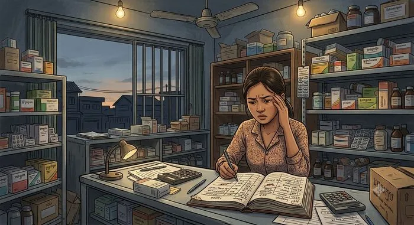
손으로 적는 재고 장부, 누락과 오차의 반복.
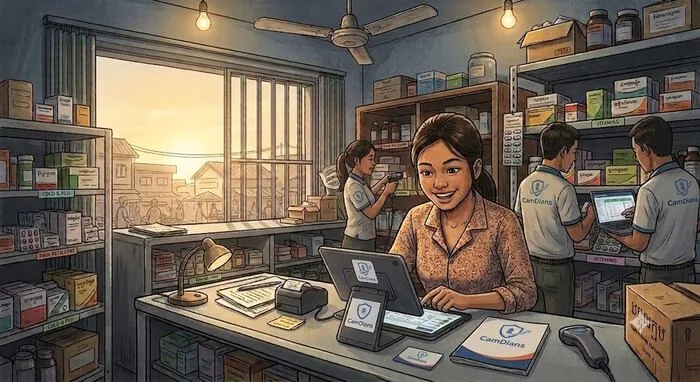
캄디언즈가 방문해 시스템을 세팅하고 재고를 함께 정리합니다.
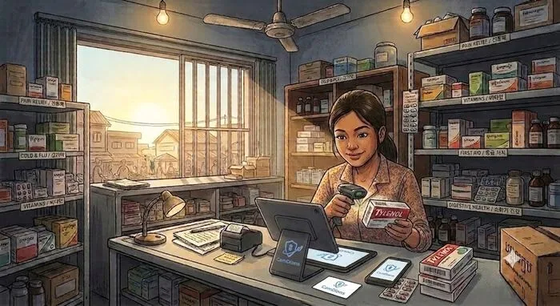
바코드 스캔 한 번으로 실시간 재고를 확인합니다.
1분 5초로 보는 CamDiansRX 사용법 · 영어·크메르어 자막 포함
Pharmacie Pisith에서 CamDiansRX가 매일 쓰이고 있습니다. 방문·전수조사·대면 교육을 모두 현장에서 직접 했습니다. 한 곳씩 늘려갑니다.
프놈펜 약국 방문, 재고 전수조사, 대면 교육의 순간들. 열 장 모두 현장에서 찍은 사진입니다.
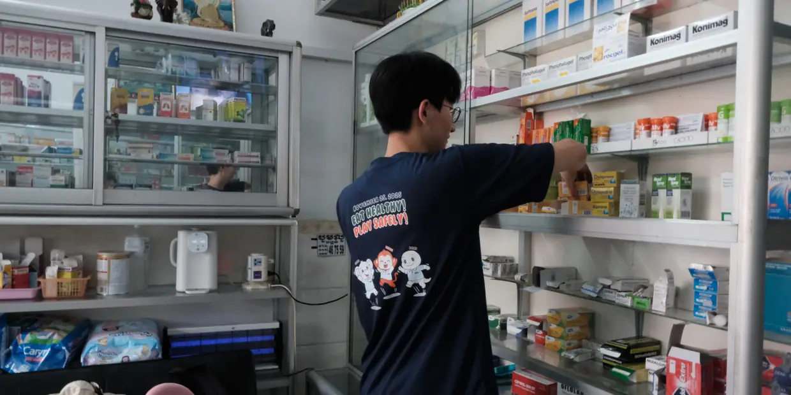
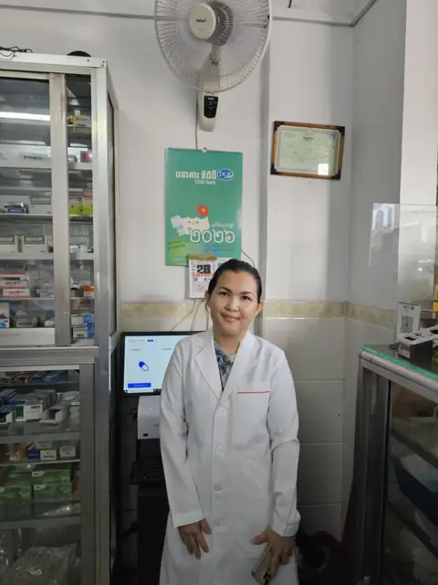
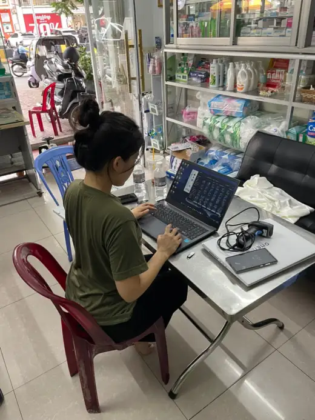
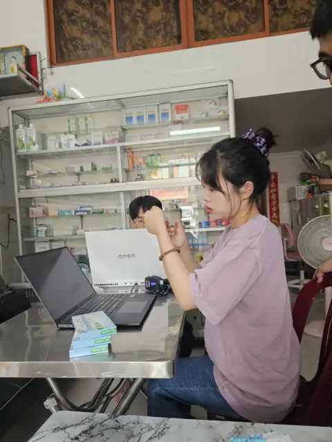
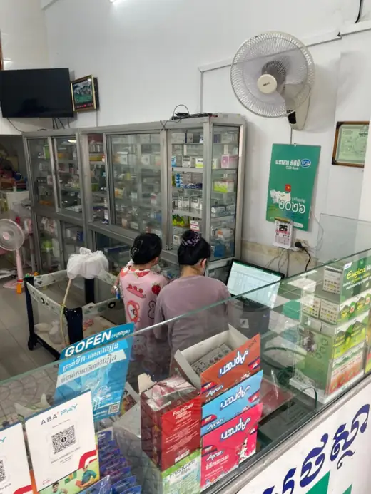
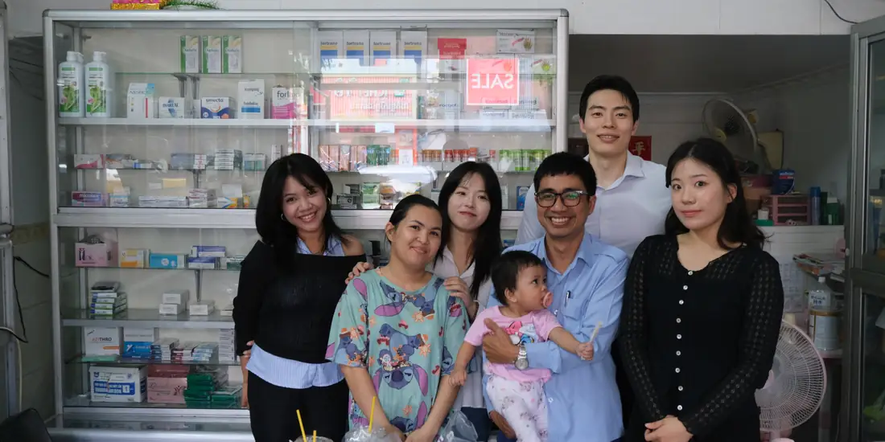
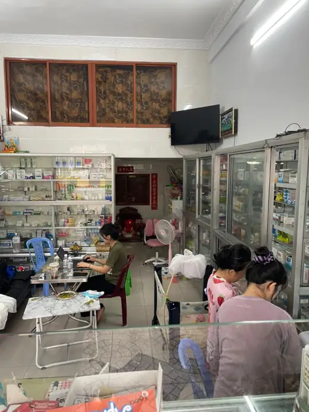
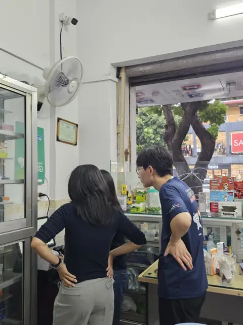
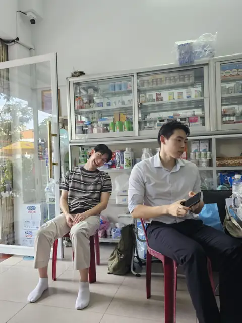
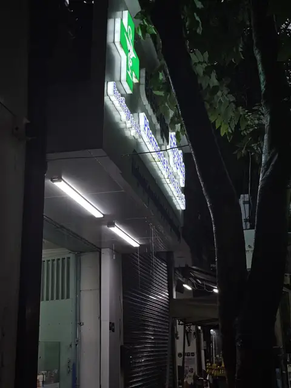
아래 막대를 잡고 움직이면 사진이 넘어갑니다.
모든 플랜에 사용방법 교육과 재고 전수조사·입력 대행이 포함됩니다. 1년 할부 기준, 미국 달러입니다.
캄디언즈는 약국의 순수익을 늘리는 동시에, 캄보디아 1차 의료망의 안전을 지키는 사회적 가치를 만듭니다.
만성질환(NCD) 사인 비중 — 상시 재고 최적화로 약물 순응도 단절 방지, 2차 합병증·사망 예방
치료 가능한 질환으로 목숨을 잃는 ‘치료 가능한 사망’을 줄이는 실시간 재고 매칭
진단 없이 약국서 직접 구매하는 비중 — 정보 비대칭 해소로 안전한 1차 의료망 구축
개도국 약국의 실질적인 재고·판매 데이터를 기반으로 보편적 의료 보장(UHC, SDG 3.8) 달성에 기여하는 것이 캄디언즈의 궁극적 목적입니다. 향후 국제 사회와 글로벌 NGO가 동남아시아 의료 인프라 개선 사업을 추진할 때, 캄디언즈가 구축한 약국 네트워크와 재고 데이터는 가장 강력한 민관 협력(PPP) 파트너십 채널이 됩니다.
연락해주시면 사업계획서를 보내드립니다.
메일 앱이 열리지 않으면 아래 주소로 보내주세요.
camdians0306@gmail.com